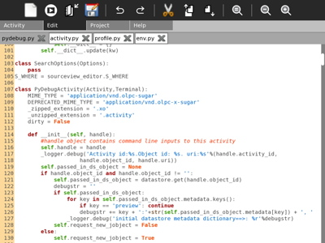
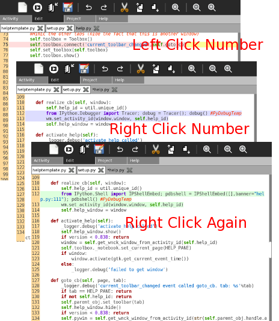

The menu items at the top of the page provide the basic editing functions of PyDebug. By hovering over the icon, you can get a short description of the function of each button (from left to right):
When you load an Activity into the PyDebug workspace, the Editor will automatically load the largest python programs, (those filenames ending with ".py") from the root Activity directory. Whenever you start running your program, before the first breakpoint is reached, any changes that you have made to your programs will be saved from the Editor's memory buffers to the files in the playpen. This is required because the text mode debugger is designed to work from disk files directly.
If you do not want this automatic saving of changes, you should click on the "X" on the tab of the file that you do not want to save, and answer "cancel" when asked whether you want the program to be saved. If you do not have permissions to write a file back to its original location, the debugger will ask you whether, as an alternative, you want the altered file to be written to the playpen with your other files.
One of the most productive ways to program is to find programs that do approximately what you want your program to do. Then cut and paste that small portion of code into yours, and modify it to do what you want. Often, when you use cut and paste, you will need to change variable names. For this, use the find and replace (magnifier icon, third from the right). The project page makes it easy to copy a file, or even a folder containing a number of files, to your playpen. Then, after you have copied the code snips you are interested in, it's fairly easy to delete these files from the playpen (lower right button in plapen).
 The editor is used for setting breakpoints in the program you are debugging. By left clicking on the number column, you create a red highlight on the breakpoint line, and you tell the ipdb debugging program to stop there when it steps through your program line by line. The red highlight, and the breakpoint it represents is a toggle -- click once to set, click again to unset.
During the early part or your program development, you will probably be trying to get it to work as a stand alone program. This is usually the first step, before you try to get it to be a sugarized subclass of the activity.Activity super class, and have it working with the Journal, etc. During this early phase, the red highlight type of breakpoint is the most convenient.
Once you start the graphical gtk.mainloop() program development, the left-click red breakpoints will be useful up to the point where all the graphical elements are defined (__init__ sections). As soon as you transfer control to the mainloop, the step by step control exercised by the ipdb debugger is lost, and mouse clicks cause your code to be executed without debugger supervision. The right click on the number column is a convenient way to insert debugging phrases into your code for testing purposes.
The right click on the number column cycles through <no breakpoint>, <trace breakpoint>, <shell breakpoint>, back to <no breakpoint>. When you are right clicking on a blue or green highlight, you may click on any of the colored lines.
The trace breakpoint inserts a blue highlight with call to "Tracer()" At this point all the same step, next, print statements are available. Once you have answered your questions about what you code is doing, you can use the "c" (for continue) command to return from the trace session.
The third type of breakpoint inserts a green highlight and opens a full shell at the point in the progam where you click the number column. This will give you all the function you normally have in an ipython shell. One of the most useful commands is "who", which lists all the variables in the local context. If an object, or system command, isn't being recognized, you can use tab completion to find out what the active definitions are at that point in the program.